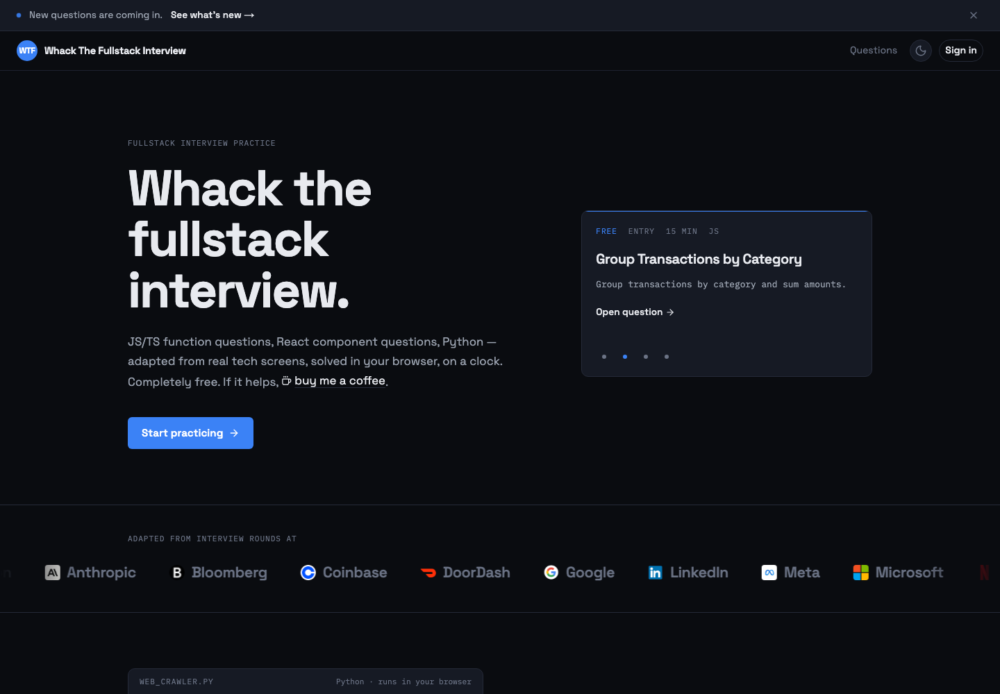

Whack The Fullstack Interview
JS/TS function questions, React component questions and Python, adapted from real tech screens. Solved in your browser, on a clock.
In-browser test runner, official solutions, discussion threads, question packs. Free to practise; the coffee button is optional.
Next.js 16 · React 19 · TypeScript · Tailwind v4 · Supabase · Prisma · Monaco · Sandpack · Stripe
Open wtfinterview.com →